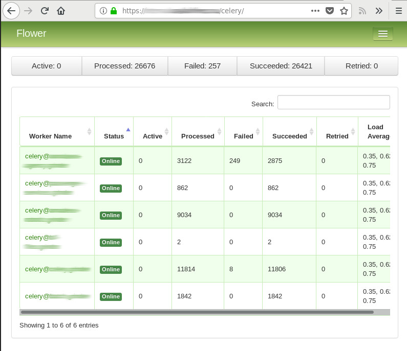

Django authorization for Celery Flower
10/07/18 На картинке изображён интерфейс Celery Flower: утилиты для наблюдения за деятельностью очереди задач celery.
Это удобный инструмент, который позволяет оперативно выявить проблемные задачи, их статус выполнeния, проверить состояние celery-воркеров, да и просто понять в каком состоянии находиться система отложенных задач.
Данный инструмент очень просто устанавливается и настраивается, а так-же, имеет достаточно полную документацию.
Поэтому, в этой статье я рассмотрю только пример контроля доступа к данному веб-интерфейсу с использованием уже имеющейся в проекте системой авторизации. В моём случае это django; я хочу дать доступ всем пользователям с флагом is_superuser.
Django as reverse proxy
Для организации внешнего контроля доступа (в библиотеке есть встроенные) нам надо организовать то, что называется reverse-проксированием.
То есть, веб-сервер который проверил права пользователя, перенаправляет запрос другому веб-серверу (в нашем случае celery flower), который и отдаёт контент (веб-странички, статику, ajax-запросы).
Беглый поиск по существующим решениям привёл к библиотеке django-proxy, которая, в силу своей простоты, уже год как не обновлялась. Однако, она содержит вполне рабочий и python3-совместимый код.
Устанавливаем flower и данную библиотеку. Запускаем flower на произвольном порту localhost
~$ pip install flower django-proxy
~$ celery -A my_project flower --address=127.0.0.1 --port=8404 --url_prefix=celery --persistent=True --db=../flower.db
Как видим, тут использовано совсем не много опций конфигурации. Кроме адреса и порта я так-же указал:
url_prefix - это адрес внутри нашего сайта, на котором будет жить данный интерфейс
- persistent, db - включают режим сохранения состояния между перезапускамирасположение файла *.db может быть любым
Добавляем интерфейс в наш проект
# views.py
import proxy.views
from django.contrib.auth.decorators import user_passes_test
# .......
@user_passes_test(lambda user: user.is_superuser)
def flower_proxy(request, path):
url = 'http://127.0.0.1:8404/'
return proxy.views.proxy_view(request, url + path)
# .......
# urls.py
from .views import flower_proxy
# .......
urlpatterns = [
# .......
url(r'^celery/(?P<path>.*)', flower_proxy, name="flower"),
]
Вот и всё.
Аналогичным образом можно подключить и другие веб-интерфейсы, используемые проектом.
Альтернативы
Чаще всего в качестве forward-прокси используются высоко-производительные сервера, такие как nginx, apache2, и т.д. Поскольку, они позволяют держать достаточно много открытых соединений, без существенного влияния на производительность.
Использование веб-сервера с django как форвард-прокси может быть нежелательным, т.к. уменьшает количество свободных worker'ов. А повышение числа воркеров потребляет оперативную память, и снижает общую производительность.
Поэтому, более логичным выглядит решение на основе http_auth_request_module для nginx и mod_auth_form для apache2. Особенно если один из них уже используется для предоставления статики проекта или каких-либо других целей.
Но это, конечно, потребует значительно больших манипуляций чем в описанном варианте. Возможно, я опишу этот вариант позже.